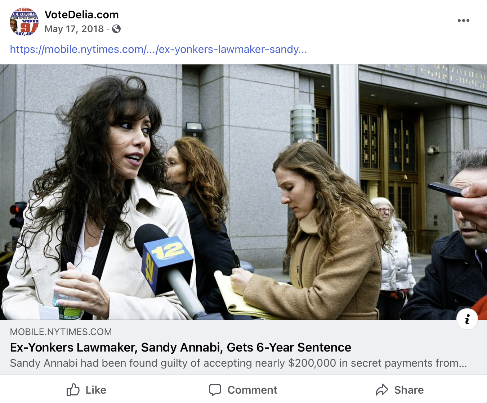
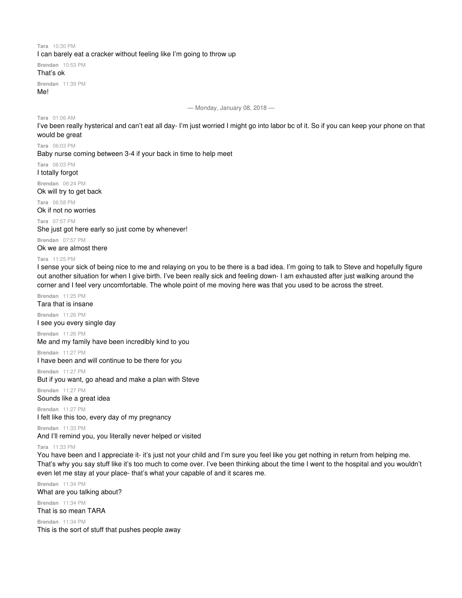
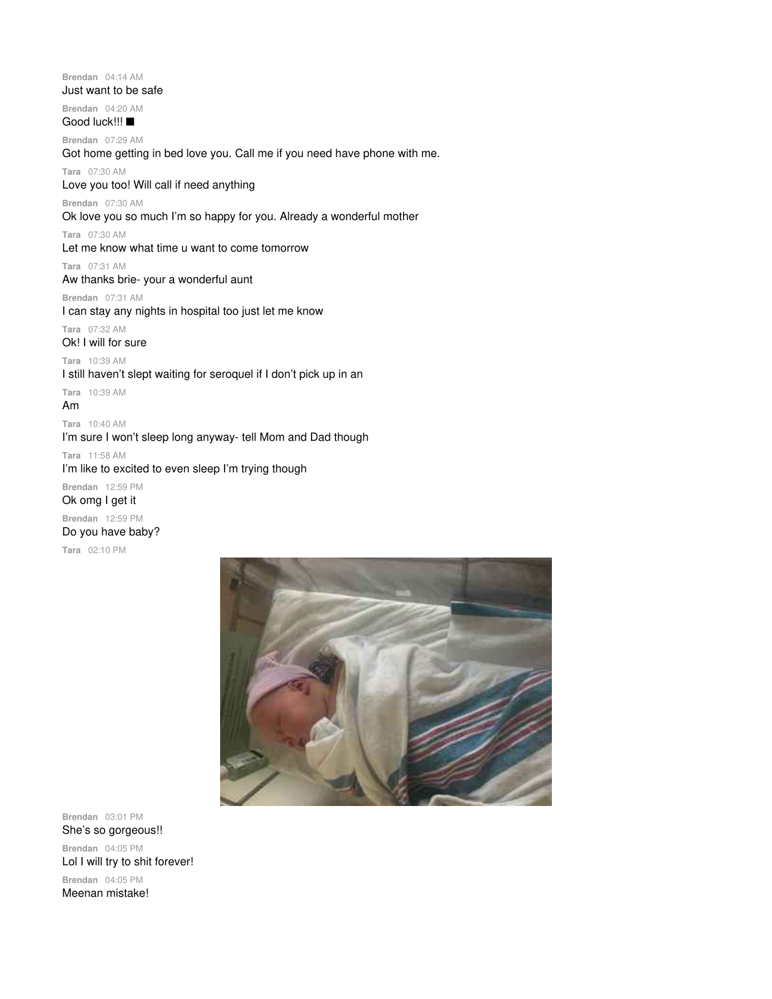
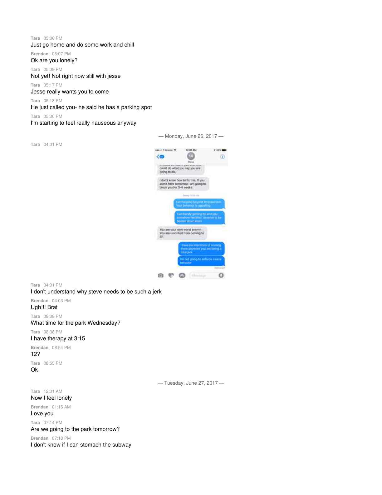
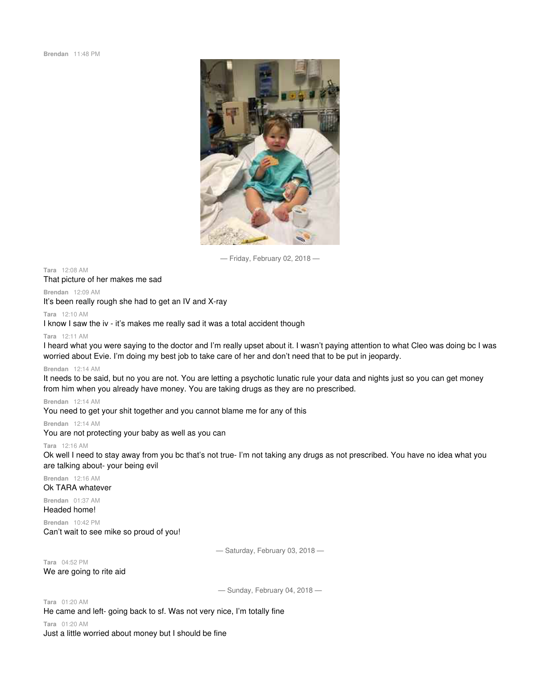
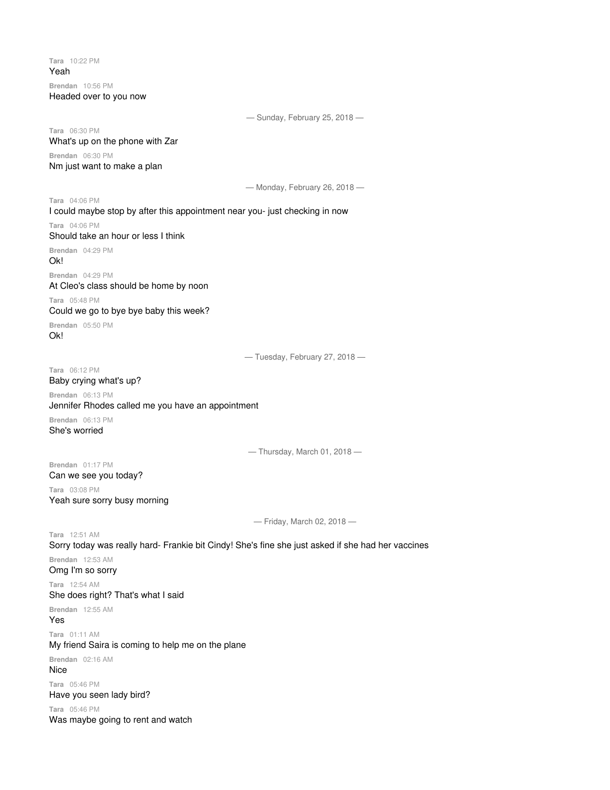
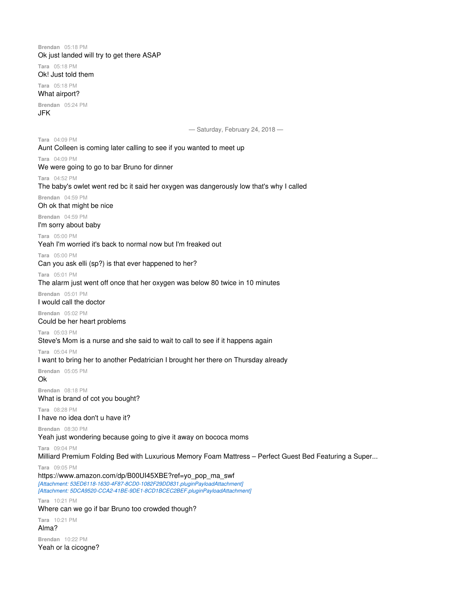
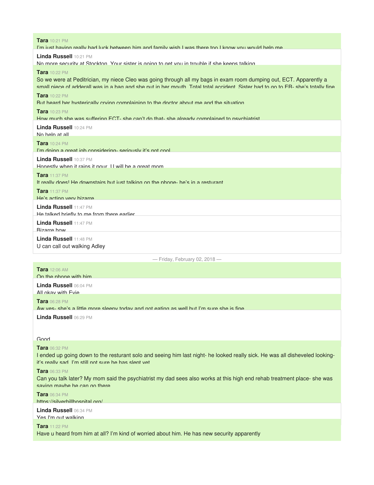
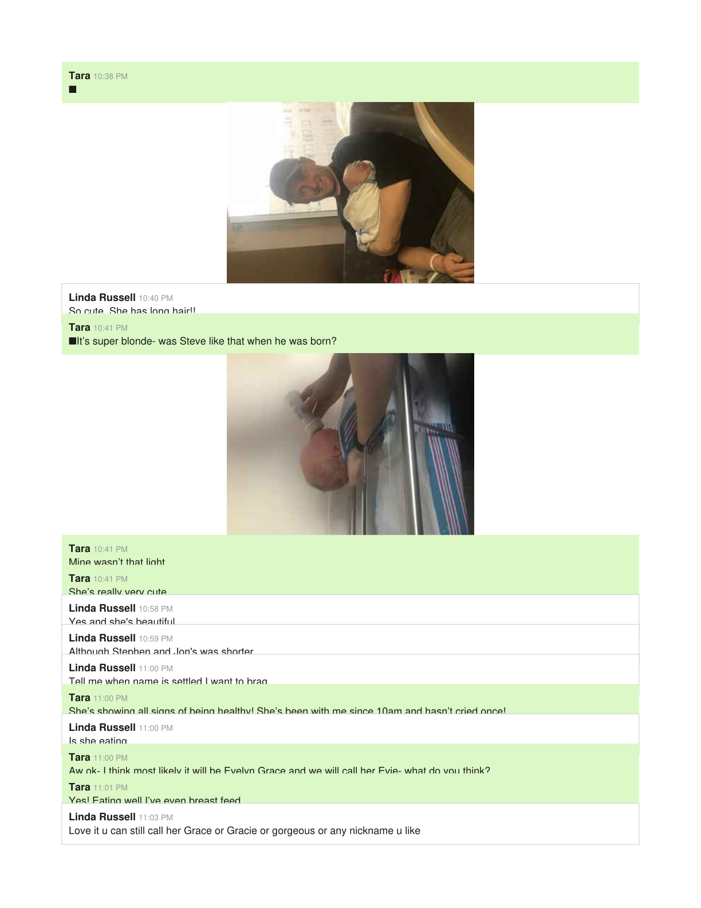
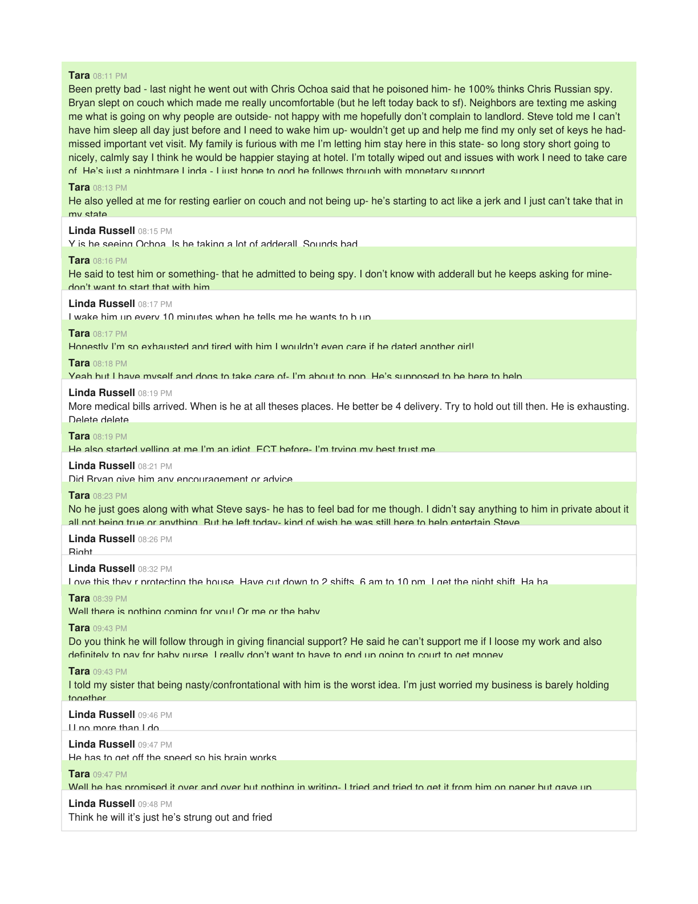

Photo Card — Standard (720px)
Default photo-card. Magazine-quality image centered in reading column. No dark container — just the image, shadow, caption.
The Walsh estate in Chappaqua sat on a wooded lot at the end of a cul-de-sac. To visitors it looked like any other Westchester colonial. But the house contained evidence of something else entirely.
 Walsh Chappaqua Estate 2.jpeg)
Inside, the dynamics were already deteriorating. What looked stable from the outside was fracturing in ways the children would carry forward for decades.
Photo Card — Wide (960px)
photo-card photo-wide. Full reading-width for panoramic or high-impact images.

Photo Card — Narrow (480px)
photo-card photo-narrow. For portrait photos, small objects, phone screenshots.

Document Card (560px)
document-card. Paper-like elevation for court filings, affidavits, legal documents. Narrower, heavier shadow, subtle border.
 Gordon-Oliver Filing Oct 2018 3.jpeg)
Document Card — Second Example
Another document-card to show consistency across different document types.

Gallery — 2-Up
gallery-2up. Side-by-side comparison. Good for before/after, diptych, contrast pairs.
 Gordon-Oliver Filing Oct 2018 copy.jpeg)
Gallery — 3-Up
gallery-3up. Triptych layout. Three related images in a row.
 Gordon-Oliver Filing Oct 2018 3.jpeg)
 Gordon-Oliver Filing Oct 2018 copy.jpeg)
Gallery — 4-Up
gallery-4up. 2×2 grid. For evidence series, four related items.

Gallery — 9-Up
gallery-9up. 3×3 contact sheet. For surveillance stills, large series, montages.









Inline Flow Test — Photo Card in Prose
How a standard photo-card sits between paragraphs of narrative text. This is the most common usage.
The letter from Dr. Swagel arrived in the mail on a Tuesday. It was unremarkable in every way that mattered — standard letterhead, professional tone, the kind of correspondence that lands in a stack with utility bills and catalogs. But what it contained would become central to everything that followed.

Reading it now, years later, the language is striking for its restraint. There is no alarm in the prose, no urgency. It reads like a formality — which, in retrospect, is exactly what made it so dangerous.
Inline Flow Test — Document Card in Prose
A document-card between narrative paragraphs. Narrower than photo-card, heavier shadow. The reader should instinctively know this is a legal artifact.
On October 15, 2018, a blog post appeared on Brienne Walsh's website. It referenced Tara's threat to sue — a threat that had been communicated privately but was now, suddenly, public. The post was brief but its implications were not.

The timing was not coincidental. Three days earlier, the custody filing had been amended. Two days before that, the deposition had gone badly. Everything was converging.
Inline Flow Test — Gallery Between Paragraphs
A 2-up gallery between narrative paragraphs, showing how it flows with text.
The text messages between Steve Russell and Steve Walsh told two different stories depending on which ones you read. Read one way, they showed a father trying to maintain contact with his daughter. Read another way, they showed an escalating pattern of interference.
 Steve Russell Steve Walsh copy 2.jpeg)
 Steve Russell Steve Walsh copy.jpeg)
Both readings were correct. That was the problem.